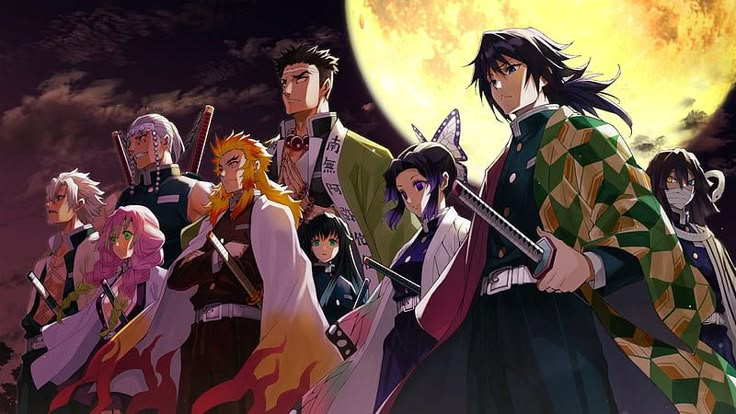

Os 9 pilares
Giyu Tomioka

Idade: 21 anos
Posto:hashira da Água
Status:Vivo
Gênero: Ação, aventura, animação, fantasia
Resumo: Os hashiras são os 9 espadachins mais poderosos do anime, eles são os soldados de elite da organização e são considerados os humanos mais fortes da série

Idade: 21 anos
Posto:hashira da Água
Status:Vivo